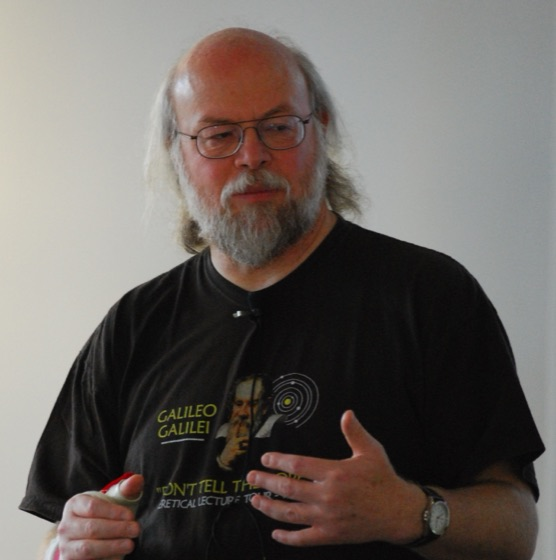

Entstehung von Java
Woher die Sprache kommt – und woher ihre Ideen kommen
Von „Oak“ zu Java
- 1991
Green Project bei Sun Microsystems: James Gosling und sein Team entwerfen eine Sprache für vernetzte Geräte – Arbeitstitel „Oak“, für Object Application Kernel und nach der Eiche vor Goslings Büro
- 1992
Prototyp „*7“: ein Handheld mit Touchscreen für interaktives Fernsehen
- 1994
Der erhoffte Markt bleibt aus – das WWW wächst. Kurswechsel: dieselbe Sprache, neues Ziel
- 1995
Umbenennung in Java (der Name „Oak“ war vergeben); Netscape nimmt Java in den Browser auf
- 1996
JDK 1.0 – aus einer Sprache für Set-Top-Boxen wird die Sprache des Netzes


Von Sun zum OpenJDK
- 1999
Java 2 Platform, Enterprise Edition (J2EE) – Java erobert Server und Unternehmensanwendungen
- 2006/07
Sun stellt Java unter die GPL → das OpenJDK entsteht. Im selben Zug wird auch Duke freigegeben
- 2010
Oracle übernimmt Sun
- heute
Das OpenJDK ist die quelloffene Referenzimplementierung – Java hängt nicht mehr an einem einzelnen Hersteller

_waving.svg){kind=link}
Warum „Java“?
- „Oak“ war markenrechtlich schon vergeben – ein neuer Name musste her
- Java ist eine Kaffeesorte (nach der Insel) – Kaffee war im Team reichlich im Spiel
- Sichtbar geblieben: die dampfende Tasse im Logo, Komponenten heißen „Beans“
- Der Name ist Zufall – die Technik dahinter war es nie
Woher die Ideen kommen
- prozedural
- objektorientiert
- funktional
- logisch
- multiparadigmatisch
- gemeinsame Plattform
- Pfeil = „ist hervorgegangen aus“ · JavaScript ist seit 1997 als ECMAScript standardisiert · Ausschnitt, keine vollständige Ahnentafel
Javas drei Wurzeln
- C / C++ → die Syntax
geschweifte Klammern, Typ vor dem Namen,
if,for - Smalltalk → die Laufzeit-Idee alles ist ein Objekt, Bytecode auf einer virtuellen Maschine, automatische Speicherverwaltung
- Objective-C → die Protokolle der Vorläufer dessen, was in Java Interface heißt
Java ist damit kein Bruch mit dem Bekannten, sondern eine Auswahl: vertraute Syntax, dahinter eine konsequent objektorientierte Plattform.
Was Java bewusst weglässt
Übernommen wurde die Syntax von C++ – nicht deren Freiheiten:
- Zeigerarithmetik und
delete– den Speicher räumt der Garbage Collector - Mehrfachvererbung von Klassen – stattdessen Interfaces
- Operator-Überladung und Präprozessor
„Java ist C++ ohne Waffen, Messer und Keulen.“ – James Gosling zugeschrieben